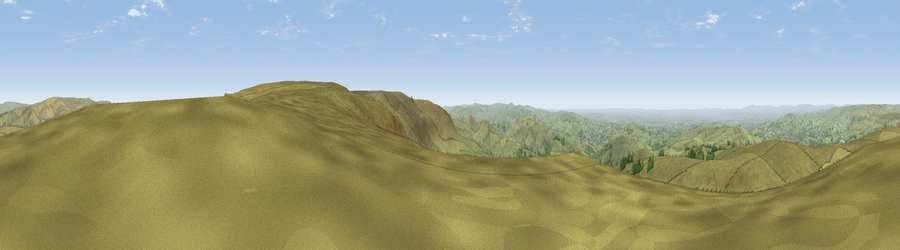

Viewpoint near Little Hayfield
#5382 in England · top 3% of its area beats it · near Little Hayfield · open accessWhere it is
The exact computed spot (SK 06788 89725). Click the marker for map links.
Public access: this spot lies on mapped open-access land (CRoW Act 2000) — you may roam here on foot. Computed from Natural England's CRoW access layer and OpenStreetMap rights of way — not the legal definitive map. Always verify locally.
The view, rendered

A 360° render of this exact spot computed from the terrain model, tree cover and land cover — summer colours, afternoon light, calibrated against photographs of famous viewpoints. Real trees, hedges and buildings will differ in detail.
The panorama
Grey silhouette: terrain skyline in each direction (720 bearings, Earth curvature and refraction included). Dashed green: skyline with trees (+15 m) and buildings (+8 m) as obstacles. Blue strip: how far the ground is visible on each bearing.
Where the view opens
Wedge length = distance to the farthest visible ground on that bearing (vegetation-aware). Rings at 10, 25 and 50 km.
What fills the view
92% grassland · 5% woodland · 2% built-up ·
Angular shares of the visible panorama (visual magnitude), not map area. Landscape diversity 0.15 (0–1 Shannon).
Key numbers
More beautiful places nearby
The staircase of upgrades: each row has a higher view potential than everything closer. Driving times are estimates from straight-line distance, calibrated against real road routing — check an actual route before setting out.
| Place | Direction | Drive | Score |
|---|---|---|---|
| Viewpoint near Upper Booth | SSE · 3 km | ~7 min | 70.2 |
| Viewpoint near Upper Booth | S · 3 km | ~8 min | 72.6 |
| Lord's Seat | SE · 8 km | ~16 min | 73.1 |
| Harrop Edge | NW · 11 km | ~20 min | 74.6 |
| Wild Bank | NW · 11 km | ~22 min | 76.2 |
| Viewpoint near Carrbrook | NW · 13 km | ~24 min | 77.1 |
| Viewpoint near Edenfield | NW · 38 km | ~57 min | 77.5 |
| Viewpoint near Mow Cop | SSW · 38 km | ~57 min | 78.9 |
53.40430, -1.89937 · source: screening · position refined by local search. Computed location — check access rights before visiting.